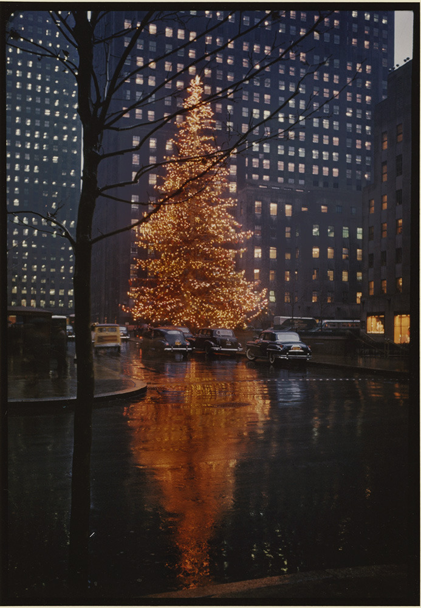

Boombox on the Deuce, 1985
Boombox on the Deuce, 1985
NYC, 1983, RA Clayton
NYC Skyline, 1981
Downtown, 1981
Queensboro Bridge, 1981

Fast Women, 48th and Broadway, 1981

The United Nations building, 1981
Subway life, 1982

Garbage cans and graffiti in Tribeca, 1981
Brooklyn Bridge, 1981

Broadway and 29th, 1973

I totally saw this as “Juicy Lungs” at first. Chinatown, 1979.
The Chrysler Building, 1980s

87th and Broadway

Raising a windmill on the roof of 519 E. 11th Street, 1970s

Cabs in Times Square, 1971
Broadway and 47th, 1981
Snow on St Mark’s Place, 1983

Ho ho ho! 34th and 8th
1970 Times Square
Skinny-ass Santa begging in midtown
A snowy day on 96th and Broadway, 1969
Hi nostalgia love your pictures! The picture I was referring to was hair power hair salon on St Mark's place in 1985, I'm curious cuz I used to work there in 1985, did you take this picture? Gucci Tusa Stephen.
Hiya, thanks! No, I didn’t take that picture. Not sure who did, sorry. Cheers!
Fillmore East, on 6th Street. 1970s.

Lower East Side, 1990s
Who are you?
I’m a joker, I’m a smoker, I’m a midnight toker. I sure don’t want to hurt no one. I’m a picker, I’m a grinner, I’m a lover, and I’m a sinner. I play my music in the sun.
Did you take this picture? Cuz I used to work there in 1985! 😊🚬
Not sure which pic you’re talking about, but I probably didn’t take it.
Santa after successfully delivering presents to the entire Empire State Building, 1981
Tina Turner getting a hot dog, 1981
Tracy 168, 1980s

St Mark’s, 1985
A tourist’s home movie from 1976, all around NYC

Riding the 1 train, 1978

Outside the A7 club, 1981
Bleecker Bob’s, McDougal St, 1979
Say “cheese”. 1981.
Playground on the lower east side, 1963
Home theater, 1984

Zephyr, 1980

Heavily bombed M Train at the Avenue U Station in Brooklyn, 1979.

Queensboro Bridge, 1986

Looking at Park Ave, 1974
An hour of footage from 1974, from a “special report”. One reporter trashes the City; one praises it.
That’s some weird theatrical makeup.

42nd and 8th, 1979

Babies and garbage, 99th and Broadway, 1968

AA Train and garbage cans at Columbus Circle, 1970

Economy candy? Yum? Rivington Street, 1960s.

Alfred EisenstaedtÂ
Rockefeller Center Christmas Tree, NYC, 1950

Good thing he’s skinny. 1980